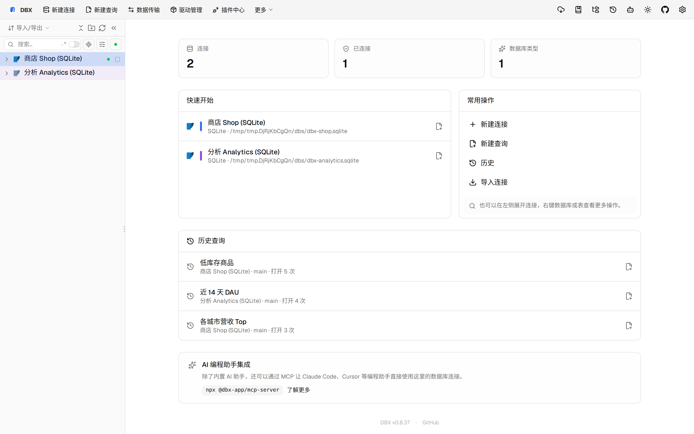
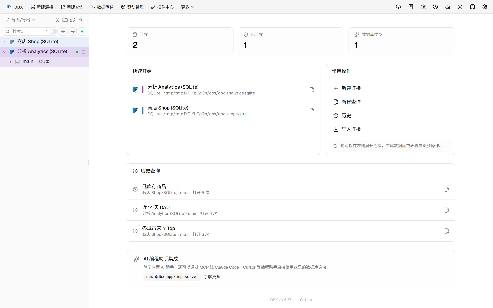

#11475 界面预览
commit 98e59df · 回到 PR · 这次改动主要影响 SQL 编辑器的 OceanBase Oracle 列补全与元数据解析：会把同义词解析得到的实际目标身份传递到补全、诊断和表元数据缓存里，并区分当前 schema 与显式 owner。页面上可见的是编辑器补全、表信息与联动行为的变化，而不是新的独立页面。
⚠️ 这次录制有 10 步没能按计划执行；带 ⚠️ 的截图拍摄于步骤失败之后，画面未必是说明文字所描述的状态。
红线是鼠标走过的轨迹，红色圆环是一次点击；底部文字是这一步在做什么。多个场景各自从应用初始状态开始。空格暂停，← → 逐段查看。

⚠️ 编辑器补全中的同义词身份 · 查看编辑器里补全上下文与表名引用
 ⚠️ 表元数据使用解析后的目标身份 · 查看数据网格和表元数据区域，确认页面仍能正常加载大表
⚠️ 表元数据使用解析后的目标身份 · 查看数据网格和表元数据区域，确认页面仍能正常加载大表

⚠️ 表元数据使用解析后的目标身份 · 查看表结构页，确认字段与表身份相关信息仍可展示